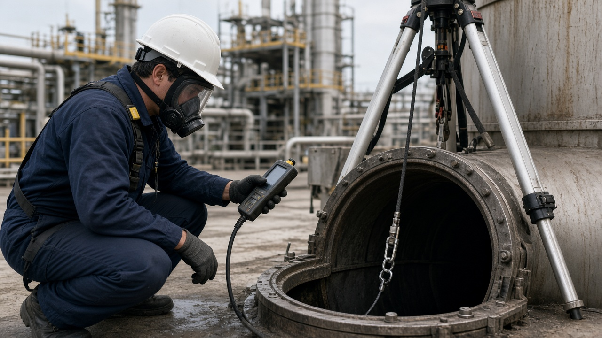

Bài viết · CVNH-01 · Kỹ thuật an toàn công việc nguy hiểm
Không gian hạn chế (CSE) và đo khí — vì sao một lần đo đầu ca không đủ
Không gian hạn chế — thường gọi là confined space, viết tắt CSE cho việc ra vào không gian hạn chế (confined space entry) — là những khu vực không được thiết kế cho con người làm việc thường xuyên, có lối vào và ra hạn chế, và quan trọng nhất, có khả năng tích tụ khí độc, thiếu oxy, hoặc khí dễ cháy nổ do không khí không tự lưu thông như ở không gian mở. Bể chứa, hầm ga, hố kỹ thuật, khoang tàu, hoặc đường ống lớn đều là những ví dụ điển hình.
Điểm khác biệt cốt lõi giữa không gian hạn chế và không gian mở không phải là kích thước, mà là việc không khí bên trong không tự trao đổi với không khí bên ngoài. Điều này có nghĩa là nồng độ khí bên trong có thể thay đổi liên tục theo thời gian — do phản ứng hóa học, do vi sinh vật phân hủy vật liệu hữu cơ, do khí thoát ra từ vật liệu ở đáy không gian — mà không có cách nào để người quan sát từ bên ngoài nhận biết chỉ bằng mắt hoặc bằng cảm giác. Bài viết này trình bày cách đo khí đúng, vai trò người canh gác, và vì sao kế hoạch cứu nạn phải có sẵn trước khi bất kỳ ai bước vào.

Không gian hạn chế là gì và vì sao nó nguy hiểm khác hẳn không gian mở
Ở một không gian mở, nếu có khí độc hoặc khí dễ cháy thoát ra, luồng không khí tự nhiên thường pha loãng và phân tán khí đó theo thời gian, giảm nồng độ nguy hiểm. Ở không gian hạn chế, do lối vào và ra hạn chế và không có luồng không khí tự nhiên trao đổi, khí thoát ra sẽ tích tụ dần theo thời gian, có thể đạt đến nồng độ nguy hiểm dù ban đầu ở mức an toàn. Cùng một lượng khí thoát ra, ở không gian mở có thể không gây ảnh hưởng đáng kể, nhưng ở không gian hạn chế có thể đủ để gây ngạt hoặc nổ.
Thêm vào đó, nhiều không gian hạn chế có các lớp vật liệu ở đáy — bùn, cặn hữu cơ, rỉ sét kim loại — có thể tiếp tục sinh ra hoặc tiêu thụ khí theo thời gian mà không cần có nguồn thải mới từ bên ngoài. Rỉ sét kim loại tiêu thụ oxy chậm nhưng liên tục; vật liệu hữu cơ phân hủy sinh ra khí H2S hoặc metan. Những quá trình này diễn ra âm thầm và không thể phát hiện bằng mắt, chỉ có thể phát hiện bằng thiết bị đo khí.
Đo khí trước khi vào — đo cái gì, đo ở đâu
Một thiết bị đo khí đa năng tiêu chuẩn cho không gian hạn chế cần đo tối thiểu bốn thông số:
- Nồng độ oxy (O2) — mức bình thường khoảng 20,9%; dưới mức này là thiếu oxy, có thể gây ngạt; trên mức này là dư oxy, làm tăng nguy cơ cháy.
- Khí cháy nổ (LEL — lower explosive limit) — đo theo phần trăm của giới hạn nổ dưới, cảnh báo khi nồng độ khí dễ cháy đang tiến gần đến mức có thể bắt cháy hoặc nổ.
- Khí độc phổ biến — thường là carbon monoxide (CO) và hydrogen sulfide (H2S), hai loại khí độc thường gặp nhất trong không gian hạn chế công nghiệp và hệ thống xử lý nước thải.
- Đo theo nhiều độ sâu hoặc nhiều tầng nếu không gian sâu — khí nặng hơn không khí như H2S có xu hướng tích tụ ở đáy, trong khi khí nhẹ hơn như metan tích tụ ở phần trên; đo một điểm duy nhất có thể bỏ lỡ vùng nguy hiểm ở độ sâu khác.
Việc đo cần thực hiện trước khi mở nắp hoàn toàn nếu có thể — đưa đầu dò qua một khe nhỏ để lấy mẫu không khí bên trong trước khi con người tiếp cận trực tiếp cửa vào.

Vì sao phải đo liên tục, không chỉ đo một lần đầu ca
Kết quả đo khí đạt yêu cầu vào lúc bắt đầu ca làm việc chỉ xác nhận điều kiện không khí tại đúng thời điểm đó. Trong quá trình làm việc, nhiều yếu tố có thể làm thay đổi nồng độ khí bên trong: công việc đang thực hiện có thể tự sinh ra khí — ví dụ hàn cắt sinh ra khí độc, hoặc khuấy động lớp cặn ở đáy giải phóng khí đã tích tụ; nhiệt độ thay đổi trong ngày có thể ảnh hưởng đến tốc độ bay hơi hoặc phân hủy của vật liệu bên trong; và các quá trình sinh học hoặc hóa học tự nhiên trong không gian đó tiếp tục diễn ra không phụ thuộc vào việc con người có đang làm việc hay không.
Vì những lý do này, tiêu chuẩn thực hành tốt yêu cầu đo khí liên tục hoặc theo chu kỳ ngắn trong suốt thời gian có người ở trong không gian hạn chế, không chỉ đo một lần trước khi cho phép vào. Nhiều thiết bị đo khí hiện đại có chức năng cảnh báo tự động khi nồng độ vượt ngưỡng, cho phép giám sát liên tục mà không cần đo thủ công lặp lại.
Người canh gác ngoài (attendant) và quyền dừng việc
Người canh gác ngoài không gian hạn chế có nhiệm vụ duy nhất, không kiêm nhiệm việc khác cùng lúc: liên tục quan sát người bên trong, duy trì liên lạc bằng lời hoặc bằng dây tín hiệu, theo dõi thiết bị đo khí, và có quyền — cùng trách nhiệm — yêu cầu người bên trong ra ngay khi phát hiện bất kỳ dấu hiệu bất thường nào, bao gồm cảnh báo từ thiết bị đo khí, mất liên lạc, hoặc quan sát thấy hành vi bất thường của người bên trong.
Một lỗi thường gặp là để người canh gác kiêm nhiệm thêm việc khác gần khu vực, như chuẩn bị vật tư hoặc trả lời điện thoại, dẫn đến việc quan sát bị gián đoạn đúng vào lúc cần thiết nhất. Vai trò canh gác cần được coi là một nhiệm vụ toàn thời gian trong suốt thời gian có người bên trong, không phải một việc phụ có thể tạm dừng.
Kế hoạch cứu nạn phải có trước khi vào, không phải sau khi có sự cố
Một trong những nguyên tắc quan trọng nhất của công tác không gian hạn chế là kế hoạch cứu nạn phải được chuẩn bị và có sẵn thiết bị, nhân sự trước khi bất kỳ ai bước vào, không phải được nghĩ ra sau khi sự cố đã xảy ra. Nhiều trường hợp tử vong trong không gian hạn chế xảy ra với người cứu nạn tự phát — thường là đồng nghiệp hoảng loạn chạy vào cứu người gặp nạn mà không có thiết bị bảo vệ hô hấp phù hợp, và trở thành người gặp nạn thứ hai trong cùng một không gian có khí độc.
Tình huống thực tế thường gặp
Trên hiện trường, áp lực tiến độ và thói quen “làm tắt” thường khiến người ta bỏ qua đúng những bước kiểm soát quan trọng nhất. Khi sự cố xảy ra, mọi người mới nhìn lại và thấy chuỗi sai lệch nhỏ đã xuất hiện từ trước: checklist hình thức, brief thiếu, permit ký nhưng không xác minh, vùng nguy hiểm không được phong tỏa.
Bài học chung: đừng đợi hậu quả lớn mới siết quy trình. Hãy biến các điểm dừng việc thành phản xạ tập thể.
Sai lầm hay gặp khi áp dụng
- Biết đúng nhưng không ghi nhận bằng chứng
- Giao việc mà không giao quyền dừng việc
- Đào tạo một lần rồi coi như xong năng lực
- Chỉ siết trước thanh tra / đánh giá
Việc làm trong tuần này (1 hành động)
Chỉ chọn một việc — làm xong trong 7 ngày, có bằng chứng.
- Hành động: áp dụng một điểm kiểm soát then chốt của CVNH-01 vào checklist đang dùng
- Bằng chứng: Ảnh / phiếu checklist có ngày giờ + chữ ký hoặc xác nhận giám sát
- Người chịu trách nhiệm: Người phụ trách HSE khu vực + giám sát trực tiếp
Ghi nhớ: Không có bằng chứng = chưa làm. Họp ngắn cuối tuần chỉ cần trả lời: đã làm / chưa / vướng gì.
Tóm tắt mang ra hiện trường
- Không gian hạn chế nguy hiểm hơn không gian mở vì không khí không tự trao đổi — khí có thể tích tụ đến mức nguy hiểm mà không có cách nhận biết bằng mắt.
- Đo khí trước khi vào cần đo tối thiểu oxy, khí cháy nổ (LEL), khí độc phổ biến (CO, H2S), và đo theo nhiều độ sâu nếu không gian sâu.
- Một lần đo đạt yêu cầu đầu ca không đảm bảo an toàn suốt ca — cần đo liên tục hoặc theo chu kỳ ngắn trong suốt thời gian có người bên trong.
- Người canh gác ngoài phải là nhiệm vụ toàn thời gian, không kiêm nhiệm việc khác, và có quyền yêu cầu người bên trong ra ngay khi phát hiện bất thường.
- Kế hoạch cứu nạn phải chuẩn bị sẵn trước khi có người vào; tuyệt đối không tự phát chạy vào cứu người mà không có thiết bị bảo vệ hô hấp phù hợp.
Bạn làm permit, LOTO hoặc công việc nguy hiểm
Học bài bản với khóa CVNH-01
Kỹ thuật an toàn các công việc nguy hiểm — học online, tiến độ cá nhân, 99.000đ, kiểm tra cuối khóa, chứng nhận tùy điều kiện.